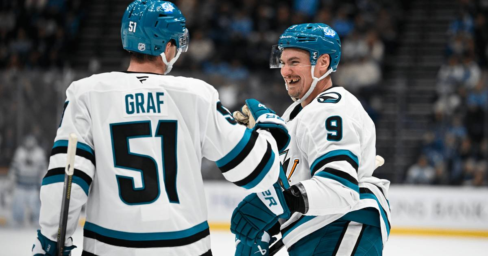

Dmitry Orlov's four-point night — and a franchise-record six seconds — carry the Sharks past Utah in a shootout
Dmitry Orlov had a goal and three assists, including the go-ahead goal with 5:43 left, as San Jose rallied from two down to beat Utah 6-5 in a shootout — a night that also saw the Sharks score twice in six seconds, a franchise record, and a rookie defenseman score his first NHL goal.

Disclosure: this post contains affiliate links. I earn a commission on qualifying purchases.
The night
The San Jose Sharks spent most of Saturday night chasing the game. They trailed 2-0, then 3-1, then 4-3. They were outshot 32-21 and didn't hold a lead until Dmitry Orlov's slap shot with 5:43 left in regulation.
Then they won it anyway — 6-5 in a shootout over the Utah Mammoth at Delta Center, in a game that packed a four-point night from a defenseman, a franchise record, and a first NHL goal into one wild evening.
Orlov finished with a goal and three assists, his go-ahead tally at 14:17 of the third a knuckling shot from the point that was partially blocked and sailed over Karel Vejmelka's glove. It was the first lead of the night for San Jose, and it capped a night where the veteran was involved in nearly everything the Sharks did right.
Six seconds of history
The record came in the second period, and it came fast. Adam Gaudette tipped in a point shot from Orlov on the power play at 3:07 to make it 3-2 — and six seconds later, Zack Ostapchuk beat Vejmelka between the legs on the rush off the ensuing faceoff to tie it 3-3. Six seconds apart: the fastest two goals in Sharks franchise history.
The firsts kept coming. Rookie defenseman Eric Pohlkamp, a 2023 fourth-round pick recalled on Nov. 3, scored his first NHL goal at 5:23 of the third — a wrist shot from the top of the slot past Vejmelka's glove — to tie the game 4-4. His defensive partner was the one who made sure he kept the souvenir: Orlov grabbed the puck for him.
"I think Orlov grabbed it for me, which was cool," Pohlkamp said.
Tyler Toffoli added a goal and an assist, Yaroslav Askarov made 27 saves, and after Barrett Hayton tied it 5-5 on a power play at 16:22 and a scoreless overtime, Macklin Celebrini and Mason Marchment scored in the shootout — Marchment's winner coming in the fifth round.
The other side
Utah did plenty right and still lost its fifth straight game. Zac Jones scored twice, Kailer Yamamoto had three assists, Mikhail Sergachev had a goal and an assist, and Jack McBain and Hayton scored — but the Mammoth, playing without Logan Cooley, Nick Schmaltz and Dylan Guenther, couldn't hold three separate leads. Vejmelka stopped 16 of 21 shots.
For San Jose, the win snapped a miserable run — the Sharks had lost six of their past seven (1-5-1) coming in — and it was the kind of win that says something about a young team: they kept coming back, they got the record, they got the rookie his first goal, and they survived the shootout. The Sharks host Nashville on Sunday night.
Gear up: Fanatics